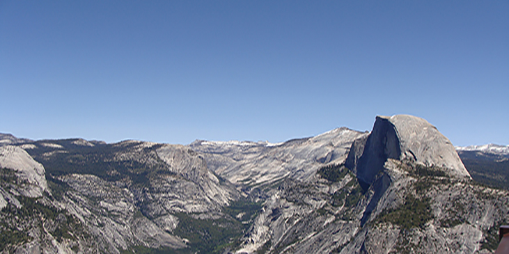

Yosemite National Park
Yosemite National Park is a United States National Park spanning eastern portions of Tuolumne, Mariposa and Madera counties in the central eastern portion of the U.S. state of California. Yosemite is internationally recognized for its spectacular granite cliffs, waterfalls, clear streams, giant sequoia groves, and biological diversity. El Capitan, a prominent granite cliff that looms over Yosemite Valley, is one of the most popular rock climbing destinations in the world because of its diverse range of climbing routes in addition to its year-round accessibility. Granite domes such as Sentinel Dome and Half Dome are as popular.
The high country of Yosemite contains beautiful areas such as Tuolumne Meadows, Dana Meadows, the Clark Range, the Cathedral Range, and the Kuna Crest. The Sierra crest and the Pacific Crest Trail run through Yosemite, with peaks of red metamorphic rock, such as Mount Dana and Mount Gibbs, and granite peaks, such as Mount Conness. The park has three groves of ancient giant sequoia trees; the Mariposa Grove, the Tuolumne Grove, and the Merced Grove . This species grows larger in volume than any other and is one of the tallest and longest-lived.